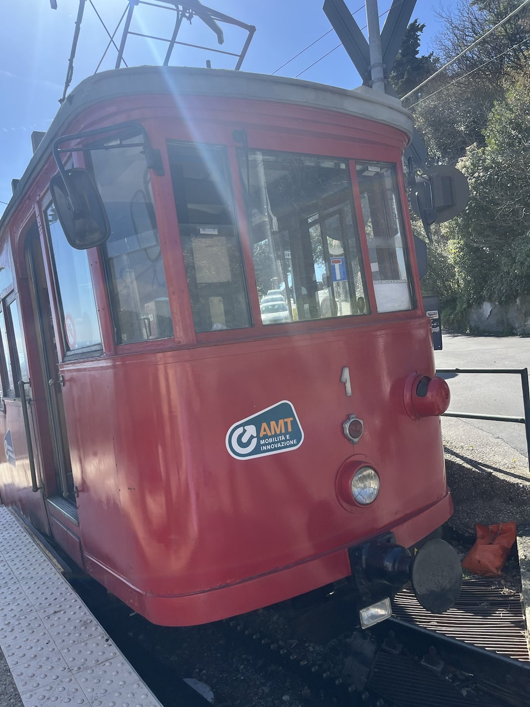
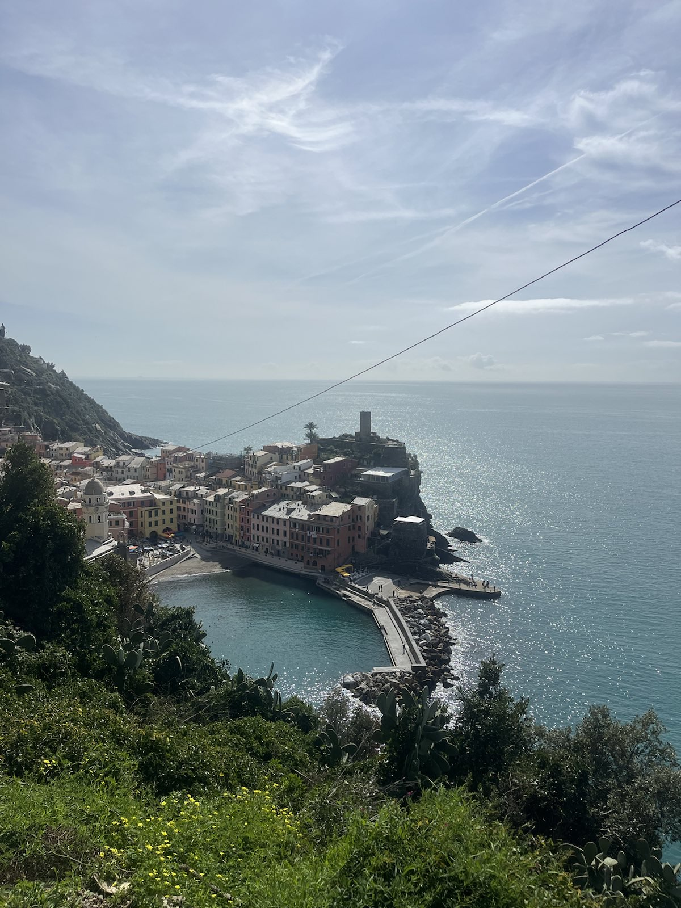

Es gibt Regionen, die man besucht, und solche, die sich langsam entfalten – mit jedem Kilometer Küstenstraße, jedem Espresso auf einer Piazza und jedem Blick über das Meer. Die ligurische Riviera gehört eindeutig zur zweiten Kategorie. Zwischen den Bergen und dem tiefblauen Mittelmeer zieht sich ein schmaler Küstenstreifen entlang Italiens Nordwesten und verbindet geschäftiges Stadtleben mit kleinen Fischerdörfern, mediterranen Düften und beeindruckenden Panoramen.
Genua – Die stolze Hafenstadt voller Überraschungen
Unsere Reise begann in Genua, einer Stadt, die weit mehr ist als nur ein bedeutender Hafen. Zwischen engen Gassen, prachtvollen Fassaden und lebhaften Plätzen entfaltet sich ein faszinierender Kontrast aus Geschichte und Moderne. Ein besonderes Erlebnis war die Fahrt mit der einzigartigen Zahnradbahn, die einen in höhere Lagen der Stadt bringt, um einen atemberaubenden Panoramablick über die Stadt zu erhaschen. Von oben scheint die Stadt beinahe wie ein Amphitheater, das sich entlang der Hügel ausbreitet.

"Zurück im Zentrum führt der Weg zur eleganten Galleria Giuseppe Mazzini und zur Piazza Raffaele De Ferrari, dem pulsierenden Herz Genuas. Unter dem gläsernen Dach der Galleria herrscht eine fast nostalgische Atmosphäre – kleine Geschäfte, Cafés und kunstvolle Architektur.

Der große Brunnen auf der Piazza spiegelt die Fassaden der umliegenden Gebäude wider, während sich Menschen aus aller Welt niederlassen oder flanieren. Später zog es uns nach Boccadasse Beach – ein kleiner Ortsteil, der wie ein vergessenes Fischerdorf mitten in der Stadt wirkt. Mit bunten Häusern, Fischerbooten und sanften Wellen scheint hier die Zeit langsamer zu vergehen.
Rund um Portofino – Wandern zwischen Himmel und Meer
Südöstlich von Genua verändert sich die Landschaft erneut. Rund um das malerische Portofino beginnen Wanderwege, die durch mediterrane Wälder, entlang steiler Felsküsten und zu Aussichtspunkten führen. Schon nach kurzer Zeit wird klar, warum diese Region Wanderer begeistert – die Wege führen vorbei an Pinien, Olivenhainen und duftender Macchia, immer wieder öffnen sich kleine Lichtungen mit Blick auf das endlose Blau des Mittelmeers.

An besonders klaren Tagen reicht die Sicht erstaunlich weit: In der Ferne zeichnen sich die schneebedeckten Gipfel der französischen Seealpen ab, während kleine Boote ihre weißen Linien durchs Wasser ziehen. Portofino selbst wirkt dabei fast wie eine Postkarte mit pastellfarbenen Häusern, eleganten Yachten und einem kleinen Hafen, eingerahmt von grünen Hügeln.
Cinque Terre – Von Dorf zu Dorf über steinerne Treppen
Wer die ligurische Riviera bereist, kommt an Cinque Terre kaum vorbei. Die fünf berühmten Dörfer kleben scheinbar an den steilen Felsen und gehören zu den eindrucksvollsten Landschaften Italiens. Die Wanderung zwischen den Orten ist dabei weit mehr als nur ein Weg von A nach B – über jahrhundertealte steinerne Treppen geht es bergauf und bergab durch Weinberge und entlang schmaler Pfade. Jeder Anstieg wird mit neuen Ausblicken belohnt: auf bunte Häuserfassaden, kleine Häfen und das glitzernde Meer tief unterhalb der Wege.
Zwischen den Dörfern verändert sich die Stimmung immer wieder – mal durch schattige Terrassenlandschaften, dann plötzlich weite Blicke über die Küste. Das Besondere ist nicht nur das Ziel, sondern der Weg selbst: Schritt für Schritt zwischen Himmel, Felsen und Meer. Am Ende bleibt vor allem ein Gefühl – die ligurische Riviera ist kein Ort, den man einfach nur bereist.

Sie ist ein Erlebnis, das sich langsam entfaltet – mit jedem Schritt, jedem Blick und jeder Begegnung. Es ist eine Reise, die nicht nur die Schönheit der Natur zeigt, sondern auch die Seele der Region spüren lässt.